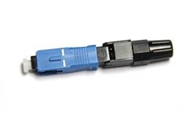
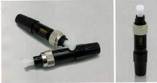

Description
The UNIKIT? Mechanical Field-Mountable Fiber Optic Connector (FMC) is designed to simple the connection without fusion splicing machine. This connector is quick assembly which requires only normal fiber preparation tools: cable stripping tool and fiber cleaver. The connector adopts Fiber Pre-Embedded Tech with superior ceramic ferrule and aluminum alloy V-groove.. Also, transparent design of the side cover which allows visual inspection. It could be applied to drop cable and indoor cable.
Technical Parameters
Item |
Paramete |
Cable Scope |
3.0 x 2.0 mm Bow-type Drop Cable |
Fiber Diameter |
125μm ( 652 & 657 ) |
Coating Diameter |
250μm |
Mode |
SM |
Operation Time |
about 15s（exclude fiber presetting） |
Insertion Loss |
≤ 0.25dB（1310nm & 1550nm） |
Return Loss |
≤ -40dB |
Success Rate |
>98% |
Reusable Times |
>10 times |
Tighten Strength of Naked Fiber |
>5 N |
Tensile Strength |
>50 N |
Teperature |
-40～+85℃ |
On-line Tensile Strength Test (20 N) |
△ IL ≤ 0.3dB |
Mechanical Durability（500 times） |
△ IL ≤ 0.3dB |
Drop Test（4m concrete floor, once each direction, three times total） |
△ IL ≤ 0.3dB |